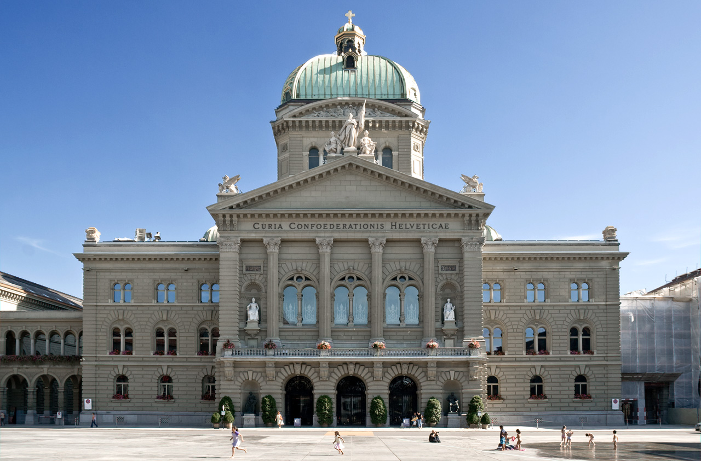
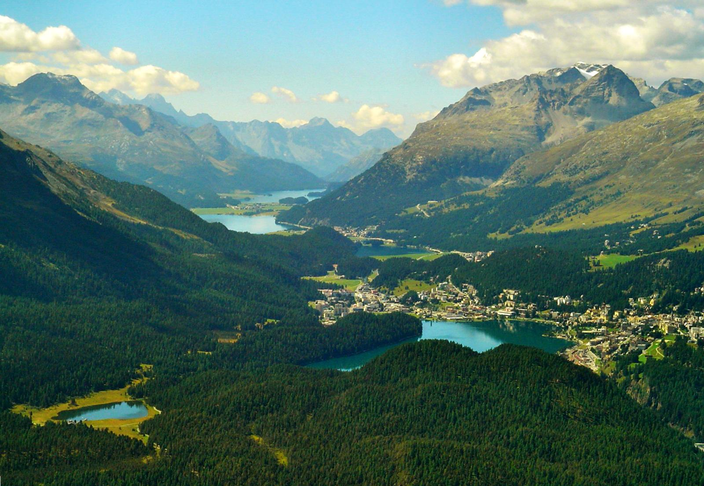
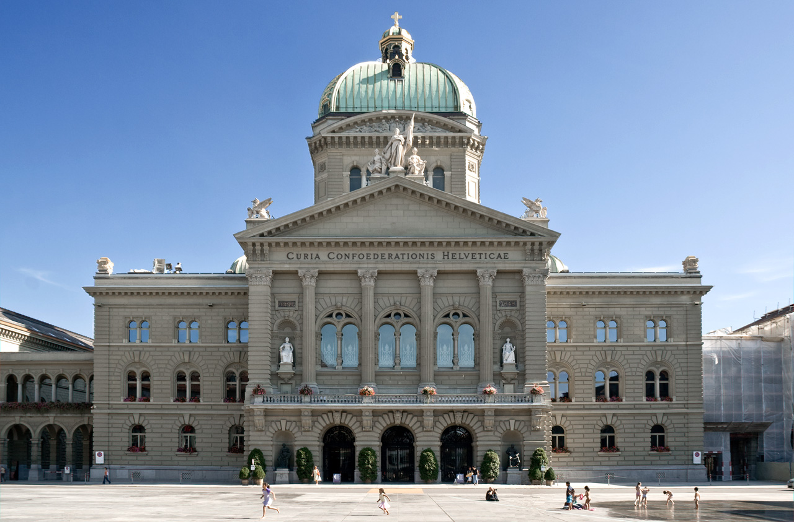
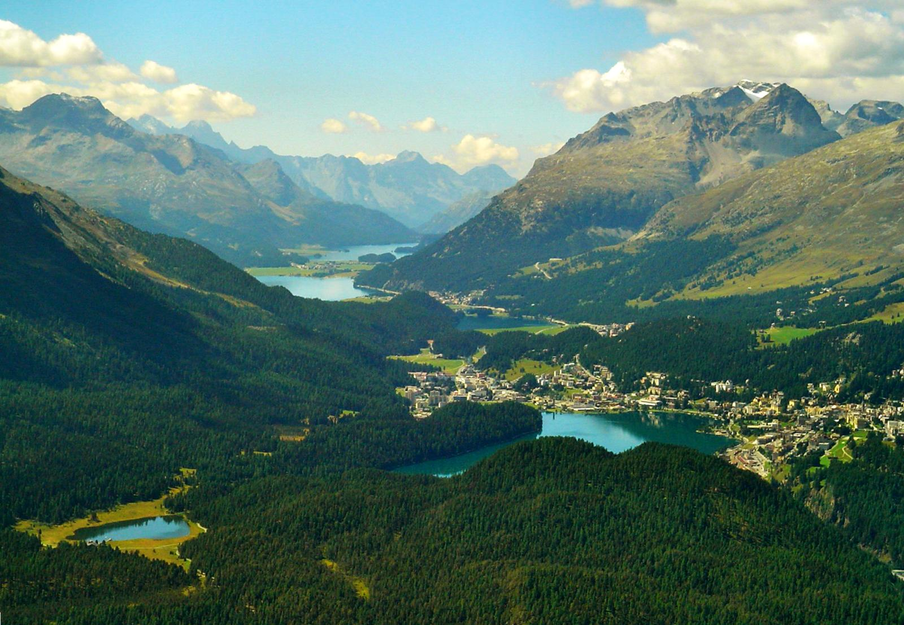

Switzerland, officially the Swiss Confederation, is a landlocked country situated at the confluence of Western, Central, and Southern Europe. It is a federal republic composed of 26 cantons, with federal authorities based in Bern. Switzerland is bordered by Italy to the south, France to the west, Germany to the north, and Austria and Liechtenstein to the east. It is geographically divided among the Swiss Plateau, the Alps, and the Jura, spanning a total area of 41,285 km2 (15,940 sq mi), and land area of 39,997 km2 (15,443 sq mi).
Although the Alps occupy the greater part of the territory, the Swiss population of approximately 8.5 million is concentrated mostly on the plateau, where the largest cities and economic centers are located, among them Zürich, Geneva, and Basel. These cities are home to several offices of international organizations such as the headquarters of FIFA, the UN's second-largest Office, and the main building of the Bank for International Settlements. The main international airports of Switzerland are also located in these cities.
Switzerland is mostly known for the Swiss Alps and the Jura Mountains, Switzerland is also home to over 1500 lakes including Lake Geneva, Lake Constance and Lake Maggiore. In addition to this, it has four national languages and so each region has its own identity depending on whether French, German, Italian or in the case of Graubünden, Romansch, are spoken in its cities and villages.
love and kind regards, the SWITZOURIST team.

.jpg)
 





.jpg)